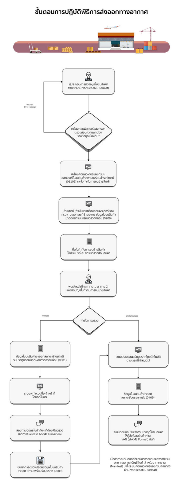
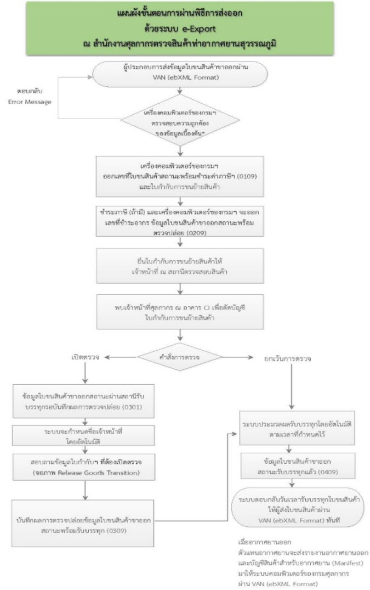

พิธีการส่งออกทางอากาศ
การปฏิบัติพิธีการศุลกากรส่งออกสินค้าทางอากาศยาน
การปฏิบัติพิธีการส่งออกสินค้า ณ สำนักงานศุลกากรตรวจสินค้าท่าอากาศยานสุวรรณภูมิ
การปฏิบัติพิธีการศุลกากรส่งออกสินค้าทางอากาศยานในปัจจุบัน เป็นการดำเนินการผ่านระบบอิเล็กทรอนิกส์แบบไร้เอกสาร (Paperless) โดยมีจุดมุ่งหมาย ในการอำนวยความสะดวกทางการค้า และเพื่อส่งเสริมความสามารถในการแข่งขันบนเวทีการค้าโลก ผู้ที่ประสงค์จะดำเนินการปฏิบัติพิธีการ ศุลกากรส่งออกสินค้าทางอิเล็กทรอนิกส์แบบไร้เอกสาร (e-Export) ณ สำนักงานศุลกากรตรวจสินค้าท่าอากาศยานสุวรรณภูมิ ต้องทำการลงทะเบียนกับกรมศุลกากร ประกาศกรมศุุลกากรที่ 61/.2561 และ 64/.2561 ลงวันที่ 27 กุมภาพันธ์ พ.ศ. 2561 เพื่อบันทึกข้อมูลไว้ในฐานข้อมูลระบบคอมพิวเตอร์ของกรมศุลกากร โดยมีขั้นตอนต่างๆด้านพิธีการศุลกากรดังต่อไปนี้.
ขั้นตอนการปฏิบัติ
ขั้นตอนการปฏิบัติพิธีการส่งออก ณ เขตปลอดอากรท่าอากาศยานสุวรรณภูมิ
สำหรับผู้ส่งของออกที่ไม่ได้ตั้งตัวแทนออกของในการปฏิบัติพิธีการศุลกากร ผู้ส่งของออก สามารถดำเนินการด้วยตนเองได้โดยปฎิบัติ ดังนี้
ลงทะเบียน
ลงทะเบียน เป็นผู้ผ่านพิธีการศุลกากรหรือดำเนินการในกระบวนการศุลกากร ได้ที่ทำการศุลกากรทั่วประเทศ สำหรับการลงทะเบียน ณ เขตปลอดอากรท่าอากาศยานสุวรรณภูมิ สามารถดำเนินการได้ที่ฝ่ายบริหารงานทั่วไป ชั้น 2 อาคารสำนักงานศุลกากรตรวจสินค้าท่าอากาศยานสุวรรณภูมิ (BC-1) โทร 0-2134-1236
หลักฐานที่ใช้ในการลงทะเบียน
1. กรณีนิติบุคคลหรือบุคคลที่เข้าระบบภาษีมูลค่าเพิ่ม
- สำเนาภาพถ่ายหนังสือรับรองการเป็นหุ้นส่วนหรือบริษัท ซึ่งออกให้ไม่เกิน 3 เดือน
- สำเนาภาพถ่ายบัตรประจำตัวผู้เสียภาษีอากรหรือ ภ.พ.20 หรือ ภ.พ.09
- Bank Statement หรือสมุดบัญชีเงินฝากออมทรัพย์ในนามบริษัท ห้างร้าน (ถ้ามี)
- สำเนาภาพถ่ายหรือหนังสือรับรองตราสำคัญของบริษัท (บอจ.3) หรือห้างหุ้นส่วน (หส.2)
- บัตรประจำตัวประชาชนหรือหนังสือเดินทาง (Passport) ของผู้มีอำนาจลงนาม
- ใช้แบบคำขอฯตามประกาศกรมศุลกากรที่ 61 ⁄.2561 และ 64 ⁄.2561 ลงวันที่ 27 กุมภาพันธ์ พ.ศ. 2561 หมายเลข 1
- กรณีหนังสือรับรองระบุเงื่อนใขต้องประทับตราสำคัญของบริษัทหรือห้างหุ้นส่วน
2. กรณีสำหรับบุคคลธรรมดา
- บัตรประจำตัวประชาชนหรือหนังสือเดินทาง (Passport)
- ใช้แบบคำขอทะเบียนตามประกาศกรมศุลกากรที่ 261/.2561 และ 64/.2561 ลงวันที่ 27 กุมภาพันธ์ พ.ศ. 2561 หมายเลข 1-1 โดยสามารถ Load แบบคำขอฯ ได้ที่ Website ของกรมศุลกากรที่ www.customs.go.th
ส่งข้อมูลใบขนสินค้า
ผู้ส่งของออกสามารถส่งข้อมูลใบขนสินค้าขาออก ได้ 4 ช่องทาง ได้แก่
- ผู้ส่งของออกส่งข้อมูลใบขนสินค้าขาออกด้วยตนเอง
- ผู้ส่งของออกมอบหมายให้ตัวแทนออกของ (Custom Broker) เป็นผู้ส่งข้อมูลแทน
- ผู้ส่งของออกใช้เคาน์เตอร์บริการ(Service Counter) ใน การส่งข้อมูล โดยสามารถติดต่อ Counter Services ได้ที่ชั้นลอย ศูนย์อาหารอาคาร BC-2 & P2 และที่อาคาร AO 1-4 เพื่อส่งข้อมูลใบขนสินค้าและข้อมูลใบกำกับการขนย้ายสินค้า.
- ผู้ส่งของออกใช้บริการส่งข้อมูลโดยเจ้าหน้าที่ศุลกากรที่ฝ่ายบริการศุลกากร 2.1 ส่วนบริการศุลกากร 2 อาคาร CE ชั้น 1 โดยผู้ส่งของออกยื่นรายละเอียดข้อมูลเกี่ยวกับใบขนสินค้า พร้อมบัตรประชาชน หรือหนังสือเดินทาง และชำระค่าธรรมเนียม
เอกสารที่ใช้ดำเนินการ
- ใบขนสินค้าขาออกซึ่งลงลายมือชื่อผู้ส่งของออก/ผู้รับมอบอำนาจแล้ว จำนวน 2 ชุด
- บัญชีราคาสินค้า (Invoice)
- Air Waybill
- Packing list (ถ้ามี)
- รายละเอียดข้อมูลใบขนสินค้าและใบกำกับการขนย้ายสินค้าทางอากาศยาน 1 ชุด
ผู้ส่งของออกต้องส่งข้อมูลใบขนสินค้าขาออก และส่งข้อมูลใบกำกับการขนย้ายสินค้าทางอากาศยาน พร้อมกันในคราวเดียวก่อนการขนย้ายของส่งออกผ่านจุดที่กำหนด checking post เลขที่ใบกำกับฯ จะใช้เลขที่เดียวกันกับใบขนสินค้า ทั้งนี้ให้ยื่นข้อมูลก่อนตารางเวลา (Vessel Schedule) ที่อากาศยานจะออกไปนอกราชอาณาจักรไม่น้อยกว่า 6 ชั่วโมง
การปฏิบัติพิธีการส่งออก
ผู้ส่งของออกหรือตัวแทนแสดงใบกำกับการ ขนย้ายสินค้าทางอากาศยานและ Air Waybill ให้แก่เจ้าหน้าที่ศุลกากร ส่วนบริการศุลกากร 2 (อาคาร CI) เมื่อเจ้าหน้าที่ศุลกากรตรวจสอบใบกำกับการขนย้ายสินค้าทางอากาศยานแล้วพบว่า มีข้อมูลอยู่ในระบบคอมพิวเตอร์ของศุลกากร เจ้าหน้าที่ศุลกากรจะดำเนินการ ดังนี้
- กรณี ยกเว้นการตรวจ (Green Line) เจ้าหน้าที่ศุลกากรลงลายมือ ชื่อ ประทับตราชื่อ และวันเดือนปี ในใบกำกับการขนย้ายสินค้าทางอากาศยาน
- กรณี เปิดตรวจ (Red Line) ระบบจะกำหนดชื่อเจ้าหน้าที่ศุลกากร เพื่อเปิดตรวจสินค้าตามระเบียบปฏิบัติและกฎหมายศุลกากร เมื่อเจ้าหน้าที่ได้ตรวจสินค้าถูกต้องครบถ้วนแล้วเจ้าหน้าที่จะลงลายมือ ประทับตราชื่อ และวันเดือนปี
- กรณีต้อง X-Ray สินค้า เจ้าหน้าที่ศุลกากรจะดำเนินการ X-Ray เมื่อเห็นว่าถูกต้องเรียบร้อยแล้ว จะประทับตรา “X-RAY” พร้อมลงลายมือ ประทับตราชื่อ และวันเดือนปี ในใบกำกับการขนย้ายสินค้าทางอากาศยาน
เมื่อผ่านกระบวนการข้างต้นแล้ว เจ้าหน้าที่ศุลกากรจะคืนใบกำกับการขนย้ายสินค้า ให้ผู้ส่งของออกหรือตัวแทนเพื่อนำสินค้าไปที่ยังคลังสินค้า และดำเนินการตรวจชั่งน้ำหนักและส่งมอบของให้คลังสินค้าเพื่อทำการส่งออก
- นำสินค้าพร้อมทั้งสำเนาใบกำกับการขนย้ายสินค้า, Air waybill ไปแสดงต่อเจ้าหน้าที่คลังสินค้า (Terminal Operator: TMO) ซึ่งขึ้นอยู่กับสายการบินที่ผู้ส่งของออกใช้บริการ (ควรตรวจสอบสายการบินที่ใช้บริการว่าอยู่ ณ คลังสินค้า (TMO) TG หรือ BFS) เพื่อชั่งน้ำหนักสินค้าและรอบรรทุกขึ้นเครื่องต่อไป
- คลังสินค้า (Terminal Operator: TMO) ส่งข้อมูล e-Manifest เข้าสู่ระบบคอมพิวเตอร์ของกรมศุลกากร เพื่อการประมวลผลรับบรรทุกโดยอัตโนมัติ ซึ่งผู้ประกอบการสามารถนำข้อมูลไปใช้สิทธิประโยชน์ทางด้านภาษีอากรได้ทันทีที่สถานะใบขนสินค้าเป็น 0409
สินค้าและใบกำกับการขนย้ายสินค้าที่ข้อมูลถูกต้องแล้วควรมาถึง หน่วยบริการศุลกากร ท่าอากาศยานสุวรรณภูมิ ก่อนเที่ยวบินออกไม่น้อยกว่า 2 ชั่วโมง
กรณีต้องผ่านการอนุมัติจากหน่วยงานอื่น
-
ใบขนสินค้าขาออกที่มีคำสั่งยกเว้นการตรวจ (Green Line) กรณีต้องผ่านการอนุมัติ/อนุญาต/รับรอง จากหน่วยงานอื่นที่เกี่ยวข้องกับการศุลกากร ให้ผู้ส่งของออกนำเอกสาร เช่น เอกสารเพื่อประกอบการใช้สิทธิพิเศษทางภาษีอากร ใบอนุญาต / ใบทะเบียน / หนังสืออนุญาต ตามเงื่อนไขของกฎหมายที่เกี่ยวข้อง สำหรับของที่ส่งออกตามบัญชีราคาสินค้าที่ส่งออกเป็นเฉพาะครั้งก่อนการส่งออก ยื่นต่อเจ้าหน้าที่หน่วยบริการศุลกากร ส่วนบริการศุลกากร 2 ณ วันที่ปฎิบัติพิธีการศุลกากร หรือภายใน 15 วัน นับตั้งแต่วันตัดบัญชีใบกำกับการขนย้ายสินค้า หากไม่ยื่นเอกสารเอกสารให้ถูกต้องครบถ้วนและภายในกำหนดเวลามีความผิดตามประมวลระเบียบปฏิบัติกำหนด
-
ใบขนสินค้าขาออกที่มีคำสั่งให้เปิดตรวจ (Red Line) เพื่อตรวจสอบพิกัด ราคา และของ ให้ผู้ส่งของออกนำเอกสาร เช่น เอกสารเพื่อประกอบการใช้สิทธิพิเศษทางภาษีอากร ใบอนุญาต / ใบทะเบียน / หนังสืออนุญาต ตามเงื่อนไขของกฎหมายที่เกี่ยวข้อง ยื่นต่อเจ้าหน้าที่ศุลกากร ขณะทำการตรวจของที่ส่งออกนั้น
ข้อพึงระวัง
- การบันทึก MASTER AWB. เช่น 21712860008 ให้บันทึกโดยไม่ได้ขีดหรือเว้นวรรค และไม่มีอักษรใด ๆ
- การบันทึกหมายเลข HOUSE AWB. ให้บันทึกโดยพิมพ์ตัวอักษรและตัวเลข ให้ติดกัน โดยไม่ขีดหรือเว้นวรรค เช่น CTI0012
- กรณี Direct Shipment ให้ระบุเลข House Airway Bill และ Master Airway Bill ให้เป็นเลขเดียวกัน
- กรณีการผ่านพิธีการส่งข้อมูล e-Export ด้วยระบบ Manual ให้ติดต่อที่ฝ่ายบริการศุลกากรที่ 2.1 ส่วนบริการศุลกากร 2 (อาคาร CE ชั้นล่าง) ก่อนเที่ยวบินออกไม่น้อยกว่า 6 ชั่วโมง

การขอแก้ไขข้อมูล
- กรณีที่สินค้าส่งออกไปนอกราชอาณาจักรไม่ครบตามจำนวน (Short Packing)
- ผู้ส่งของออกสามารถส่งข้อมูลอิเล็กทรอนิกส์เข้าสู่ระบบคอมพิวเตอร์ของศุลกากร เพื่อแก้ไขข้อมูลรายการของสินค้าที่ไม่ได้ส่งออก และยืนยันปริมาณ หรือจำนวนหีบห่อสินค้า ที่ส่งออกให้ถูกต้องตรงตามความเป็นจริงได้ โดยไม่ต้องมีการพิจารณาความผิดภายใน 10 วัน นับแต่วันตัดบัญชีใบกำกับการขนย้ายสินค้า
- หากต้องการแก้ไขข้อมูล ภายหลัง10 วันนับแต่วันตัดบัญชีใบกำกับการขนย้ายสินค้าทางอากาศยานไปแล้วนั้น กรณีใบขนสินค้า Green Line ให้ยื่นคำร้องขอแก้ไขข้อมูลดังกล่าวต่อฝ่ายบริการศุลกากรที่ 2.1 ส่วนบริการศุลกากร 2 (อาคาร CE ชั้นล่าง) ส่วนใบขนสินค้า Red Line ยื่นต่อเจ้าหน้าที่ผู้ตรวจตัดบัญชีใบกำกับการขนย้ายสินค้าทางอากาศยาน ณ หน่วยบริการศุลกากร โดยจะพิจารณาความผิดตามกฎหมายต่อไป
- กรณีที่ต้องการขอตรวจรับสินค้ากลับคืน หรือยกเลิกการส่งออก ให้ผู้ส่งของออกจัดทำคำร้องแบบแสดงขอตรวจรับสินค้ากลับคืน / ยกเลิกการส่งออกตามประกาศกรมศุลกากรที่ 134/.2561 เพื่อแก้ไขข้อมูลใบขนสินค้าให้ถูกต้อง
- กรณีการขอแก้ไขข้อมูลใบขนสินค้าในเรื่องอื่น ๆ ภายหลังการส่งออกให้ยื่น คำร้องที่ฝ่ายบริการศุลกากรที่ 2.1 ส่วนบริการศุลกากร 2 (อาคาร CE)
- กรณีที่มีการเปลี่ยนแปลงชื่ออากาศยาน หรือเที่ยวบิน วันที่ส่งออก เลขที่แอร์เวย์บิล ให้ผู้ส่งของออกหรือตัวแทน จัดทำคำร้องขอแก้ไขชื่ออากาศยานเที่ยวบิน วันที่ ส่งออก เลขที่แอร์เวย์บิล ตามประกาศกรมศุลกากรที่ 134/.2561
ที่มา : กรมศุลกากร
ปรับปรุงล่าสุด : 19 มีนาคม 2563